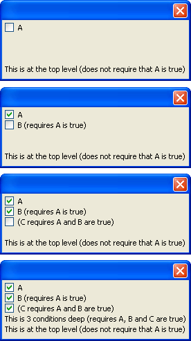

{CONDITION_BEGIN}
Syntax
{CONDITION_BEGIN = Logical_Expression }
|
Argument |
Description |
|
Logical_Expression |
An expression that evaluates to TRUE (.T.) or FALSE (.F.). |
Description
. Allows you to make portions of an Xdialog visible if a Logical_Expression is .T. This command is a variant of the {CONDITION} command, and is particularly useful when you have nested {CONDITION} statements. Each call to {CONDITION_BEGIN} adds the specified logical expression to the current "ambient" logical expression (i.e. the logical expression which controls whether the controls in an Xdialog are visible or not). The corresponding {CONDITION_END} command removes the most recently added logical expression from the current "ambient" logical expression.
Limitations
Desktop applications only
Examples
|
a = .f. ui_dlg_box("",<<%dlg% |

Here is how the same Xdialog would be created using the older {CONDITION} command:
|
a = .f. ui_dlg_box("",<<%dlg% |
See Also